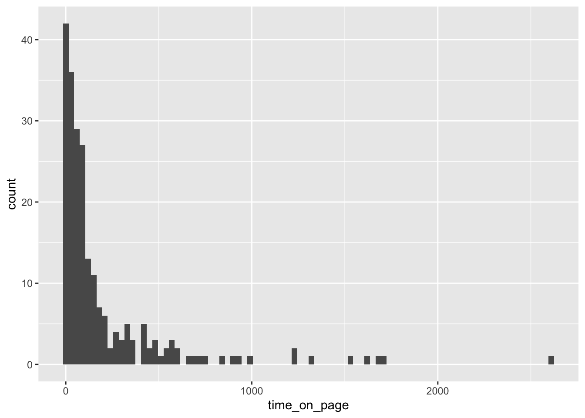

2.2 滞在時間をテストする
ここでは連続値の指標に対して仮設検定をしたい場合を扱っていく．例えば
- ウェブサイトに滞在した秒数
- 画面の表示領域に入ったウェブサイトのコンテンツの割合
などが考えられる．特にここでは後者を扱う．データについて以下のURLのものを使う．
url <- "https://www.oreilly.co.jp/pub/9784873119168/data/time-on-page.csv"
time_on_page <- read.csv(url) %>%
tidyr::as_tibble() %>%
magrittr::set_colnames("time_on_page")
str(time_on_page)## tibble [222 × 1] (S3: tbl_df/tbl/data.frame)
## $ time_on_page: int [1:222] 178 4 112 576 419 41 93 10 59 87 ...このデータセットは１列しかなく，一つのレコードが一回のアクセスの滞在時間となっている． このデータの分布のヒストグラムがFig ?? である． 裾が重い分布になっていて異常に大きな値があることがわかる．
time_on_page %>%
ggplot() +
geom_histogram(aes(x = time_on_page), binwidth = 30)

Figure 2.6: アクセスごとの滞在時間のヒストグラム
このような分布は中央値と平均に乖離が大きいことが多い，実際
time_on_page %>%
dplyr::reframe(n = n(), mean = mean(time_on_page),
median = median(time_on_page), sd = sd(time_on_page)) %>%
knitr::kable(
caption = "time_on_pageの要約統計量",
label = "summary-of-time-on-page"
) %>%
kableExtra::kable_styling(full_width = FALSE)| n | mean | median | sd |
|---|---|---|---|
| 222 | 202.3333 | 78 | 343.2041 |
ここでは，滞在時間がパラメータ\(\theta\)の指数分布に従うとして，ベイズ推論を行う． \(\theta\)の事前分布としては無情報の事前分布の意味で一様分布を採用する．
パラメータ\(\theta\)の指数分布とは以下の確率密度関数を持つ確率分布である． \[\begin{align} p(x|\theta) = \dfrac{\exp(-x/\theta)}{\theta} \tag{2.4} \end{align}\]
また，モデルとしては以下を考えることになる．
\[\begin{align} \begin{aligned} \theta &\sim \text{Uniform}(0, 3000) \\ t &\sim \text{Exponential}(\theta) \end{aligned} \tag{2.5} \end{align}\]
time